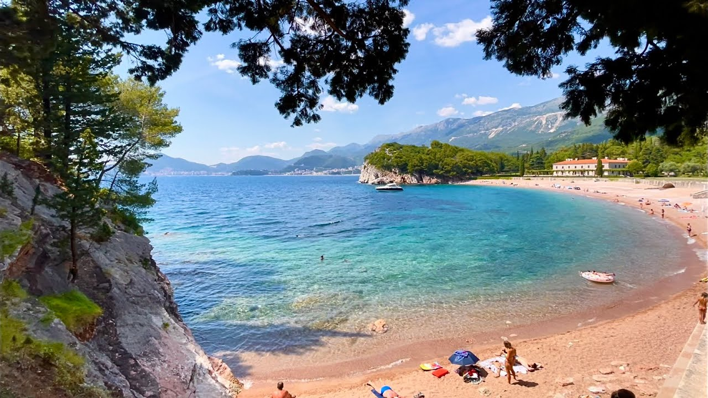

-
Plavi Horizonti
Plaža Plavi horizonti se nalaze u dnu uvale Pržno koja se smatra jednom od najlepših na ovom delu poluostrva Luštica, kao i na Crnogorskom primorju uopšte.
-
Trsteno
Uvala Trsteno predstavlja jednu od najlepših plaža u regiji Donjeg Grblja. laža je duboko je uvučena u kopno i tako zaštićena od velikih talasa, bure i juga.
-
Jaz
Na svega nekoliko kilometara od Budve nalazi se plaža Jaz, jedna od tri najduže plaže na crnogorskom primorju i svakako jedna od najlepših. Jaz se sastoji iz dva dela, od kojih je jedan dugačak 500m, a drugi, koji je nekada bio nudistička plaža, 300m.
-
Oblatno
Oblatno je uvala koja se nalazi u blizini naselja Radovići, duga 1200 m, sa peskovitom plažom i još jednom manjom stenovitom.
-
Žanjice
Plaža Žanjice se nalaze u uvali Mirište, smeštena u ambijentu azurno plavog mora i starih maslinjaka.
-

Miločer
Miločer ili Kraljeva plaža nalazi se u neposrednoj blizini nekadašnje letnje rezidencije kraljevske porodice Karađorđević, sagrađene 1934. godine.
-
Kopakabana
Plaža Kopakabana se nalazi na Velikoj plaži. Dužine je 900m i cela je peščana. Idealna je za boravak sa decom, jer ima posebnu igraonicu za njih. Takođe, popularna je među mladima.
-
Kraljičina Plaža
Kraljičina plaža se nalazi pored Kraljeve i ona je potpuno privatna, nosilac je i plave zastavice, a spada u jednu od najlepših na primorju.
-
Lučice
Plaža Lučice je udaljena 500 metara od Petrovca u pravcu Bara. Ima oblik malog zaliva, dužine je 220 metara sa plažnim barom i okolnim kafe barovima.
-
Veliki Pijesak
Uvale Veliki i Mali pijesak nalaze se na jugu barske opštine, udaljene desetak kilometara u pravcu Ulcinja. Imaju peščanu podlogu, u vodi i na obali.